조경산업기사 (2009-03-01 기출문제)
1과목: 조경계획 및 설계
1. 우리나라 전동 원지(園池)의 지안(池岸) 식물로 가장 적게 식재한 수종은?
- 버드나무
- 배롱나무
- 대나무
- 모과나무
(정답률: 61%)

2. 다음 설명 중 ( )안에 적합한 오픈 스페이스 체계 배치 모형은?
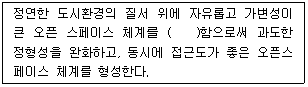
- 결절화
- 중첩
- 위요
- 핵화
(정답률: 69%)
3. 종합적 사고력을 필요로 하는 제너럴리스트(generalist)의 입장을 취하며, 다른 분야의 전문가와 협동으로 일하는 경우가 많고, 일의 형식은 자문의 방법이 많은 조경 관련 종사자는?
- 조경계획가
- 조경설계가
- 조경기술자
- 조경원예가
(정답률: 18%)
4. 1/100 축척 도면에서 면적이 4cm2 인 도면을 1/200 축척으로 복사하면 도면 면적은 얼마로 변하는가?
- 16cm2
- 8cm2
- 2cm2
- 1cm2
(정답률: 30%)
5. 어린이놀이터의 이용자를 대상으로 이용행태 조사를 실시하려고 한다. 가장 적합하지 못한 조사방법은?
- 면담(interview) 조사법
- 행태 관찰법
- 설문지 조사법
- 시간차 사진 촬영법
(정답률: 65%)
6. 전통적인 조선시대 상류주택 뒷마당의 화계(花階)에 즐겨 심겨졌던 수종이 아닌 것은?
- 앵두나무, 살구나무
- 능금나무, 철쭉
- 매화, 자귀나무
- 진달래, 반송
(정답률: 52%)
7. 다음 중 건축법령상의 규정에 의해 조경 등의 조치를 반드시 하여야 하는 건축물은?
- 자연녹지지역에 건축하는 건축물
- 면적 5천 제곱미터 미만인 대지에 건축하는 공장
- 축사
- 연면적의 합계가 3천제곱미터인 물류시설
(정답률: 52%)
8. 시설의 배치와 향(向)과의 관계를 설명한 것 중 부적합한 것은?
- 테니스장은 코트 장축의 방위는 정남-북을 기준으로 동서 5 ~ 15도 편차 내의 범위에 배치한다.
- 야구장은 홈플레이트를 동쪽과 북서쪽 사이에 배치한다.
- 실외수영장의 다이빙 풀에서는 다이빙 방향을 동서축으로 잡는 것이 좋다.
- 축구장은 단축을 동서쪽으로 배치한다.
(정답률: 47%)
9. 경제성에만 치우치기 쉬운 환경계획을 자연과학적 근거에서 인간의 환경적응의 문제를 파악하여 새로운 환경의 창조에 기여하도록 한 생태적 결정론(ecological determinism)을 주장한 사람은?
- McHarg
- Leopold
- Simonds
- Christopher
(정답률: 71%)
10. 착시(錯視, optical illusion)의 설명으로 틀린 것은?
- 시각에 관해서 생기는 착각을 말한다.
- 주위의 밝기나 빛깔에 따라 중앙부분의 밝기나 빛깔이 반대방향으로 치우쳐서 느껴지는 밝기의 빛깔의 대비도 일종의 착시이다.
- 영화처럼 조금씩 다른 정지한 영상을 잇따라 제시하면 연속적인 운동으로 보이는 기현운동은 착시로 볼 수 없다.
- 완전한 정사각형보다 높이가 약간 높은 B사각형과 반대로 약간 짧은 A사각형을 동시에 놓고 보았을 때 B는 너무 높은 느낌이 들고, A는 완전한 정사각형으로 느껴진다.
(정답률: 68%)
11. 다음 중 제도에서 파선의 올바른 선긋기 방법을 나타낸 것은?
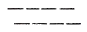
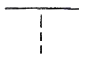
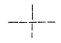
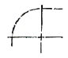
(정답률: 61%)
12. 페르시아의 회교식 정원에서 필수적으로 이용되었으며, 정원의 핵(核)이라고 볼 수 있는 것은?
- 녹음수
- 물
- 원로
- 원정
(정답률: 80%)
13. 창덕궁 후원의 정자(亭子) 중 부채꼴 모양의 평면으로 이루어진 것은?
- 관람정
- 부용정
- 애련정
- 청의정
(정답률: 77%)
14. 건물의 높이를 H, 건물과 관찰지 사이의 거리를 D로 볼 때 D/H = 3일 경우 다음 설명으로 가장 적합한 것은?
- 정상적인 사이의 상한선과 일치하므로 적당한 폐쇄 감을 느낀다.
- 폐쇄감이 다소 벗어나며 공간의 폐쇄감보다는 주대상물에 더 시선이 끌린다.
- 공간의 폐쇄감이 완전히 소멸된다.
- 특징적인 공간으로 장소의 식별이 불가능하다.
(정답률: 53%)
15. 조경계획시 기후는 중요한 요소 중 하나이다. 다음중 기후가 영향을 주는 사회적 특성(socialcharacteristics)에 해당하지 않는 것은?
- 독특한 음식과 식사
- 옷을 입는 습관
- 전통적인 습관
- 현존 직생
(정답률: 80%)
16. 채도가 매우 높은 빨강 색지를 한참 동안 바라보다가 다음 순간에 초록 색지를 보면 그 초록은 보다 선명한 초록으로 보인다. 이처럼 앞서 관찰하던 색의 잔상색이 그 다음에 본 색자극에 겹쳐서 가법혼색된 상태가 되어 나타나는 대비현상을 무엇이라 하는가?
- 동시대비
- 계시대비
- 명도대비
- 공간대비
(정답률: 62%)
17. 조경부지 내에 배치되어 있는 상태를 옆에서 수평으로 보아 수직적인 공간 구성을 나타내는 설계도는?
- 평면도
- 입면도
- 투시도
- 조감도
(정답률: 60%)
18. S.Gold(1980)는 레크레이션 접근방법을 대략 5가지로 구분에 해당하지 않는 것은?
- 자원접근방법(資源接近方法)
- 활동접근방법(活動接近方法)
- 생산접근방법(生産接近方法)
- 종합접근방법(綜合接近方法)
(정답률: 64%)
19. 중국의 이화원에 관한 설명으로 틀린 것은?
- 건륭(乾隆) 15년에 옹산을 만수산으로 개칭하는 한편 연못을 손질하여 곤명호(昆明湖)라 이름 지었다.
- 불광각(佛光閣)을 중심으로 한 수원(水苑)이다.
- 영ㆍ불 연합군에 의해 소실되어 방치되어 있다.
- 만수산 이궁 이라고도 불린다.
(정답률: 70%)
20. 경관요소(visual elements)에 있어서 인간의 시선이 종국(終局), 결정적인 요소, 혹은 구체적인 각도로 조망이 제한되는 것은?
- 질감
- 파노라마
- 폐쇄된 조망
- 비스타
(정답률: 50%)
2과목: 조경식재
21. 다음 중 굵은 뿌리가 발달한 심근성 수종은?
- 독일가문비
- 일본잎갈나무
- 종가시나무
- 은백양
(정답률: 45%)
22. 정원에 심어놓은 화훼류의 수고를 낮게 가꾸려 할때 사용하는 생장억제제는?
- auxin
- abscisic acid
- gibberellin
- cytokinin
(정답률: 58%)
23. 근원 직경이 15cm 인 수목을 조개분으로 분뜨기를 할 경우 분의 깊이는 몇 cm 인가?
- 30
- 45
- 60
- 75
(정답률: 72%)
24. 수목의 생육에 좋도록 토양이 단립(團粒)구조를 갖게 하기 위한 방법인 것은?
- 퇴비 등의 유기질 비료를 주어 토양 내 유기질 양을 많게 한다.
- 토양은 보수력과 통기성이 좋은 점토가 알맞다.
- 흙은 압축해서 빽빽하게 채워 넣는다.
- 토양의 입지가 따로따로 되어 있어 입지간의 틈을 작게 만들어야 한다.
(정답률: 48%)
25. 일반적인 가로수의 배치와 식재에 관한 설명으로 부적합한 것은?
- 식재간격은 보통 최소 6m 이상을 기준으로 한다.
- 식수대의 폭은 적어도 1m 이상이 되도록 한다.
- 보호시설에 의해서 둘러싸인 면적은 적어도 1.5m2 이상이어야 한다.
- 보도의 한쪽을 기준으로 1열 심기를 하고 2열 이상은 식재할 수 없다.
(정답률: 49%)
26. 다른 수종들 보다 자동차의 배기가스나 공해에 극히 약한 수종은?
- 삼나무
- 무궁화
- 비자나무
- 식나무
(정답률: 68%)
27. 대비(contrast) 효과를 얻기가 가장 어려운 것은?
- 넓은 잔디밭과 그 위의 포플러류
- 향나무 사이에 핀 목련꽃
- 소나무를 배경으로 한 벚꽃
- 소나무와 오리나무의 혼식
(정답률: 59%)
28. 다음 중 가장 향기가 진한 방향성 조경수는?
- 금목서
- 능소화
- 박태기나무
- 석류나무
(정답률: 93%)
29. 다음 중 강음수이면서 상록활엽관목이 아닌 수종은?
- Aucuba japonica
- Buxus microphylla vor. koreana
- IIex cornuta Lindl
- Taxus cuspidata
(정답률: 52%)
30. 도로 변 절개지에 식재 계획시 선정해야 하는 식물은?
- 1년생 식물
- 근계의 발달이 좋고 지하경 번식이 잘 안 되는 식물
- 건조에 견디는 힘이 작은 식물
- 척박한 토양에서도 잘 자랄 수 있는 식물
(정답률: 68%)
31. 주행 중 운전자가 도로의 선형 변화를 미리 판단할 수 있도록 수목을 식재하는 수법으로 도로의 곡률 반경 700m 이하가 되는 작은 곡선부에서 식재하는 방식은?
- 명암순응식재
- 쿠션식재
- 시선유도식재
- 지표식재
(정답률: 64%)
32. 우리나라 중부지방 임해공업지대에 산업공원(industrial park)을 조성하고자 할 때 적합한 수종은?
- 향나무
- 가운비나무
- 삼나무
- 자작나무
(정답률: 63%)
33. 넓은 면적에 크고 작은 나무를 불규칙한 간격으로 수목을 배치해서 불규칙한 스카이라인(skyline)을 형성토록 해서 자연스러운 수량으로 덮이게 하려면 무슨 식재를 해야 하는가?
- 랜덤식재
- 모아심기
- 군식
- 산재식재
(정답률: 71%)
34. 잔디(30cm × 30cm × 3cm)를 100m2 에 전면붙이기로 식재하려면 약 몇 매가 소요되는가?
- 901 매
- 992 매
- 1001 매
- 1112 매
(정답률: 63%)
35. 나무를 옮겨서 심을 때 가장 좋지 못한 경우는?
- 고지대에서 저지대로 옮겨 심는다.
- 북쪽에서 남쪽으로 옮겨 심는다.
- 남쪽에서 북쪽으로 옮겨 심는다.
- 동일 지방에서 바로 옮겨 심는다.
(정답률: 60%)
36. 일반적으로 뿌리분의 허리에 새끼를 감을 때 어느정도 깊이로 파내려 간 후 제작하는 것이 가장 좋은 가?
- 파내려 가면서 계속 감아간다.
- 모두 파내려 간 후 감아준다.
- 1/3정도 파내려 간 후 감아준다.
- 2/3정도 파내려 간 후 감아준다.
(정답률: 54%)
37. 귀중한 조경수의 경우 토끼나 쥐와 같은 설치류의해를 입어 껍질에 상처를 입었을 경우 실시하는 접목법은?
- 근접(根接)
- 설접(舌接)
- 교접(橋接)
- 호접(呼接)
(정답률: 48%)
38. 길이 6 ~ 7m, 직경 40cm 정도의 철 파이프를 오니층 아래에 자리잡은 지표층까지 넣어 흙을 파내고 모래를 넣어 채운 후 파이프를 빼내는 임해매립지 식재 지방조성 공법은?
- 사구법(砂灈法)
- 사주법(砂柱法)
- 객토법(客土法)
- 성토법(盛土法)
(정답률: 52%)
39. 다음 식물들 중 5월경 개화하며 꽃 색깔이 분홍색인 것은?
- Caesalpinia decapetala Alston
- Chaenomeles sinensis Koehne
- Campsis grandifolia K
- Wisteria floribunda for. alba Rehder & Wilson
(정답률: 34%)
40. 잎보다 꽃이 먼저 피는 수종으로만 짝지워진 것은?
- 배롱나무, 박태기나무
- 층층나무, 산수유
- 산수유, 오리나무
- 이팝나무, 조팝나무
(정답률: 31%)
3과목: 조경시공
41. 양단단면적(兩端斷面積)이 각각 4m2 와 5m2, 양단면 사이의 길이가 5m 일 때의 양단면평균법에 의한 체적값(m3)은?
- 17.25
- 22.5
- 45
- 50
(정답률: 58%)
42. 대지를 파내어 면을 고르고자 한다. 각 지점의 지반고는 아래의 그림과 같고 계획지반고는 100m로 하려고 한다. 구형분할에 의한 점고법으로 계산한 절토량(m3)은? (단, 그림에서의 숫자의 단위는 m 이고, 각 격자의 넓이는 10.0m2이다.)
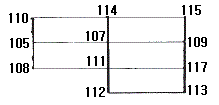
- 500.0
- 522.5
- 535.5
- 545.0
(정답률: 42%)
43. 콘크리트 혼화제 중 경화(硬化)시 응결 촉진제의 주성분으로 사용되며 조기강도을 크게 하는 것은?
- 알루미늄
- 이산화망간
- 염화칼슘
- 소석회
(정답률: 60%)
44. 네트워크 공정표 중 더미(dummy)에 대한 설명으로 옳은 것은?
- 하나의 선행작업을 나타낸다.
- 가장 중요한 공정을 나타낸다.
- 선행과 후행의 관계만 나타낸다.
- 가장 시간이 긴 경로를 나타낸다.
(정답률: 57%)
45. 다음 공정표의 전체 소요 공기(工期)는?
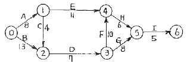
- 30일
- 40일
- 41일
- 42일
(정답률: 62%)
46. 금속면의 보호와 부식방지 즉 녹이 슬지 않게 할 목적인 녹막이 도료로 사용되지 않는 것은?
- 징크로메이트계
- 카세인
- 광명단
- 워시프라이머
(정답률: 44%)
47. 마름돌 쌓기를 할 때 철물에 속하지 않는 것은?
- 촉
- 은장
- 꺾쇠
- 코너비드
(정답률: 58%)
48. 감리원과 관련된 설명이 틀린 것은?
- 그 공사에 대하여 전문적인 기술자를 선정한다.
- 감리원은 현장대리인이 선정한다.
- 감리원은 설계도와 시방서대로 시공되지 않았을 때는 수급인에게 시정을 요구한다.
- 감리원은 발주자의 자문에 응하고 기술적으로 설계서대로의 시공여부를 확인한다.
(정답률: 65%)
49. 공사종목에 대한 설계서 단위수량의 표준단위로 부적합한 것은?
- 공사 연장 : m
- 직공인부 : 인
- 떼 : 매
- 벽돌 : 개
(정답률: 39%)
50. 표준형 벽돌을 사용하여 2.0B 의 두께로 벽을 만들었을 때 벽 두께(mm)는? (단, 줄눈 두께는 1cm 로 한다.)
- 190
- 200
- 380
- 390
(정답률: 62%)
51. 고압벽돌을 이용하여 포장공사를 할 때 다짐에 사용하기 가장 부적당한 기계 및 기구는?
- 램머(rammer)
- 콤팩터(compacter)
- 롤러(roller)
- 로더(loader)
(정답률: 60%)
52. 시가지의 가로에서 측구(側溝)의 종단 구배는 최소 몇 % 이상이 되어야 하는가? (단, 배수구가 충분한 평활면의 U형 측구일 경우는 제외)
- 0.5%
- 1%
- 3%
- 5%
(정답률: 40%)
53. 다음 그림과 같은 보의 최대 휨모멘트 값(tㆍm)은?
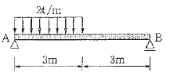
- 3.09
- 4
- 5.06
- 6
(정답률: 37%)
54. 도로 원곡선의 종류 중 복합곡선(compound curve)에 해당되는 것은?
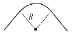
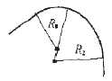
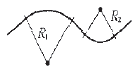
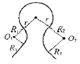
(정답률: 50%)
55. 빗물받이(雨水渠)의 바닥은 배수관(排水管)의 바닥을 기준으로 어떻게 설치하여야 하는가?
- 배수관의 바닥보다 적어도 15cm 이상 낮추어야 한다.
- 배수관의 바닥보다 적어도 30cm 이상 낮추어야 한다.
- 배수관의 바닥보다 적어도 15cm 이상 높아야 한다.
- 배수관의 바닥보다 적어도 30cm 이상 높아야 한다.
(정답률: 43%)
56. 하중(荷重)에 관한 설명으로 틀린 것은?
- 구조물에 작용하는 하중은 이동 여부에 따라 고정 하중과 이동하중으로 분류된다.
- 구조물에 작용하는 하중은 작용하는 면적의 대소에 의해 집중하중과 분포하중으로 나눈다.
- 고정하중은 적재(積載)하중 또는 활(活)하중이라고도 한다.
- 하중이 일정한 면적에 같은 세력으로 분포된 것을 등분포하중이라 한다.
(정답률: 48%)
57. 힘의 크기는 같고 작용선이 평행하지만 방향과 작용점만이 서로 다른 힘을 무엇이라고 하는가?
- 축력
- 우력
- 반력
- 합력
(정답률: 58%)
58. 다음 중 높지 않은 경사면(법면) 처리에서 자연지형과의 융합을 높이고 시각적으로 가장 좋은 경사면 형성은?
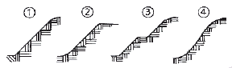
- ①
- ②
- ③
- ④
(정답률: 50%)
59. 축석공사에 관한 설명 중 틀린 것은?
- 찰쌓기시 시공에 앞서 돌에 붙어 있는 이물질을 제거하여야 한다.
- 호박돌 쌓기는 둥근 모양의 돌을 쌓는 것으로 가장 쉬운 공법이며 十자 줄눈이 생기도록 시공한다.
- 찰쌓기시 신축 줄눈은 설계도서에 의하되, 특별히 정하는 바가 없으면 20m 간격을 표준으로 찰쌓기의 높이가 변하는 곳이나 곡선부의 시점과 종점에 설치한다.
- 메쌓기의 맞물림 부위는 10mm 이내로 하며 해머 등으로 다듬어 접합시키고, 맞물림 뒷틈사이에 조약돌을 괸다.
(정답률: 60%)
60. 통나무의 길이가 6m 이고, 말구 지름이 20cm 일때 목재의 재적(m3) 약 얼마인가? (단, 국산재의 경우만을 적용한다.)
- 24
- 0.26
- 1.9
- 2.6
(정답률: 30%)
4과목: 조경관리
61. 중간 기주인 향나무류를 제거하면 병 피해를 경감시킬 수 있는 병은?
- 복숭아 검은무늬병
- 사과 탄저병
- 느릅나무 시들음병
- 사과 붉은별무늬병
(정답률: 58%)
62. 적심(摘心)에 관한 설명으로 가장 적합한 것은?
- 상록성 관목류의 전정을 통칭하는 뜻이다.
- 토피아리 전정의 한 방법이다.
- 꽃눈 조절을 위한 과수의 전정방법이다.
- 새로 나온 연한 순을 자르는 것이다.
(정답률: 60%)
63. 레크레이션 수용능력의 결정인자는 고정인자와 가변인자로 구분된다. 다음 중 고정적인 결정인자에 해당되는 것은?
- 기술과 시설의 도입으로 인한 수용능력 자체의 확장가능성
- 특정 활동에 대한 참여자의 반응 정도
- 대상지의 크기와 형태
- 대상지 이용에 영향에 대한 회복 능력
(정답률: 35%)
64. 농약잔류허용기준의 설정시 결정요소가 아닌 것은?
- 토양 중 잔류특성
- 1일섭취허용량(ADI)
- 안전계수
- 1일식품섭취량
(정답률: 29%)
65. 조경시설물의 유지관리에 대한 내용으로 부적합한 것은?
- 수도꼭지나 샤워기의 누수부분을 보수한다.
- 청소작업 지역할당에서 개인할당 청소의 장점은 조할당 청소보다 청소작업이 균등하게 분배된다.
- 고가의 관리장비 구입시는 다용도로 쓸 수 있는 것을 고려한다.
- 경우에 따라서는 청소작업을 외부에 도급을 주어 수행하는 것이 비용과 효율 면에서 유리한 경우가 있다.
(정답률: 52%)
66. 사고방지 대책은 설치하자에 대한 대책 관리하자에 대한 대책, 이용자⋅보호자⋅주최자의 부주의에 대한 대책으로 구분된다. 다음 중 관리하자에 대한 사고방지 대책이 아닌 것은?
- 구조, 재질상 결함이 있다고 인정될 경우 철거한다.
- 계획적, 체계적으로 순시, 점검한다.
- 각 시설에 대해 감시원, 지도원을 적정 배치한다.
- 위험한 유희시설에 대해서는 안내판 또는 방송에 의한 이용지도를 실시한다.
(정답률: 42%)
67. 조경수목의 해충에 대한 방제법 설명으로 틀린 것은?
- 가을에 땅을 깊이 갈아 엎어서 저온으로 죽게 하거나 봄에 새들이 잡아 먹게 한다.
- 끈끈이를 수간에 발라 두어 해충이 붙어서 죽게 한다.
- 해충이 월동하는 곳을 만들어 주어 그곳에 모아 죽인다.
- 방사선을 이용한 살충효과는 소규모에 집중적 방제가 가능하고 저렴하다.
(정답률: 60%)
68. 잣나무 털녹병균의 중간 기주는?
- 배나무
- 까치밥나무
- 참나무류
- 향나무
(정답률: 41%)
69. 수목에 대한 전염성병의 감염과 확산을 촉진시키는 요인이라고 볼 수 없는 것은?
- 병원의 침투력과 발병력 정도
- 급격한 기상변화
- 병원체의 이상 증식
- 기주식물의 건전성
(정답률: 52%)
70. 식물병의 진단법 중 지표식물을 이용하는 진단법은?
- 혈청학적 진단
- 해부학적 진단
- 현미경적 진단
- 생물학적 진단
(정답률: 60%)
71. 잡초와 작물과의 경합조건에 대한 설명으로 틀린것은?
- 같은 초종 중에서 개체간에 일어나는 경합을 종내 경합이라고 한다.
- 식물경합은 둘 이상의 식물이 각각 어느 특정요인이나 물질이 필요량보다 부족할 때 일어난다.
- 잡초와 작물간에 경합이 심할 때 생리적인 스트레스의 원인으로 작물수량은 증가한다.
- 초종이 다른 식물들 간에 일어나는 경합을 종간경합이라고 한다.
(정답률: 61%)
72. 수확기의 농산물 중 농약의 잔류량이 잔류허용기준을 초과하지 않도록 하기 위하여 작물별로 농약의 살포횟수와 수확 전 최종 살포시기(일수)를 제한하는 기준을 무엇이라고 하는가?
- 농약 안전사용기준
- 농약 잔류허용기준
- 농약 취급제한기준
- 농약 안전관리기준
(정답률: 45%)
73. 조경 수목 중 교목(喬木)류 전정에 대한 설명으로 부적합한 것은?
- 나무의 모양을 잡기 위한 전정은 낙엽 직후에 실시한다.
- 그 나무의 고유 수형을 충분히 고려한다.
- 작업은 수관 아래로부터 위로 올라가면서 실시한다.
- 일반적으로 오른쪽에서 왼쪽으로 돌아가면서 실시한다.
(정답률: 57%)
74. 매화나무의 경우 꽃이 피고 난 후 강전정을 실시하는 경우가 있는데 이러한 전정의 주 목적은?
- 수형 조절
- 생장 억제
- 수분수급 조절
- 개화결실 촉진
(정답률: 59%)
75. 조경시공에서 '도장공'이란 어느 정도의 작업수행이 가능한 작업공인가?
- 가구제작, 유리창 갈아 끼우기 등을 할 수 있는 사람
- 조명과 동력을 모두 다룰 수 있는 사람
- 기계정비, 난방설비 등을 할 수 있는 사람
- 구조물 등에 페인트 및 각종 칠을 할 수 있는 사람
(정답률: 70%)
76. 다음이 설명하는 공법은?
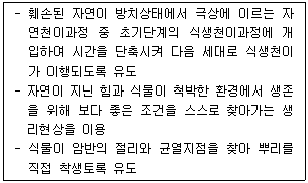
- 프로피아 그린(Propia Green) 공법
- 녹생토암절개면 보호식재공법(R/S 녹생토공법)
- 자연표토복원공법(SF녹화공법)
- 원지반식생정착공법(CODRA 공법)
(정답률: 55%)
77. 다음 중 다른 포장재료에 비하여 유지관리가 가장 용이한 포장의 종류는?
- 토사포장
- 블록포장
- 콘크리트포장
- 아스팔트포장
(정답률: 60%)
78. 수목의 시비방법 중 비료성분이 직접 토양 내에 유입될 수 있도록 하는 토양의 유상거름주기 시비법에서 일반적인 시비용 구덩이의 깊이는?
- 2 ~ 8cm
- 10 ~ 18cm
- 25 ~ 30cm
- 40 ~ 50cm
(정답률: 64%)
79. 부패된 줄기의 공동 외과수술시 순서로 가장 적합한 것은?
- 소독 및 방부 처리 → 오염된 부분 제거 → 방수처리 → 인공수피 처리
- 오염된 부분 제거 → 방수처리 → 소독 및 방부 처리 → 인공수피 처리
- 방수처리 → 소독 및 방부 처리 → 오염된 부분 제거 → 인공수피 처리
- 오염된 부분 제거 → 소독 및 방부 처리 → 방수처리 → 인공수피 처리
(정답률: 66%)
80. 식물의 선천적 내충성과 관계가 없는 것은?
- 내성(tolerance)
- 비선호성(nonpreference)
- 항생성(antibiosos)
- 회귀성(migration)
(정답률: 41%)